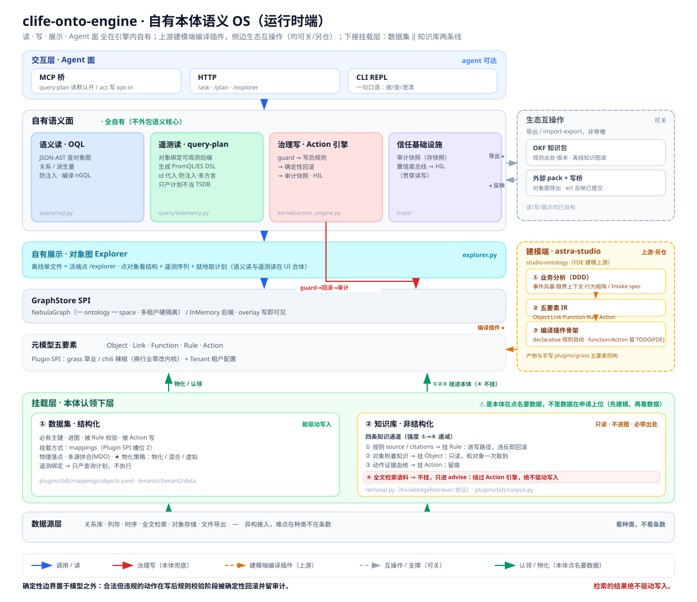

学员手册 · C-Life FDE 实战工作坊 · 180 分钟 · 讲解 + 读码，无交付物实操 配套课件：
slides/S2_本体引擎.html（讲师投屏）教材来源（一档）：clife-onto-engine 项目本身——架构图
docs/assets/architecture-overview.svg、 源码、docs/01-metamodel-and-plugin-spi.md（内核"宪法"）、CI 门禁脚本。 图上每个块都标了文件名。看不懂的地方，打开代码。
| S1 · 本体论 | S2 · 工程实现（本课） | S3 · 建模端如何支撑引擎 | |
|---|---|---|---|
| 讲哪一块 | 为什么必须有这层 | 整张图的运行时端 | 图右下角那个橙色框：astra-studio 建模端 |
| 教材 | 方法论文集 | clife-onto-engine 源码 | studio-ontology 仓库 |
| 形式 | 纯讲解 | 讲解 + 当场读码 | 讲解 + 管线走查 |
三门课是同一句话说了三遍，一次比一次具体：
S1 本体是 LLM OS 的文件系统
S2 这就是那个 OS
S3 怎么给它编译应用
L5 你亲手编译一个如果你只上 S1 不上 S2：你能判断一个本体方案好不好，但说不出"好在哪一行"。 客户的架构师问"你们的规则引擎和我们现有的校验有什么区别"，你会答不上来。 S2 就是为了让你答得上来。
读完这一课，你应该能做到：

本课接下来每一章，认领图上一个块。
图文件：
figures/fig-S2-引擎全景.svg（原件clife-onto-engine/docs/assets/architecture-overview.svg）。 打印这份手册时它会一起印出来；想看大图，用浏览器单独打开那个 svg，可以无限放大。
从下往上——因为上面那些面能做什么，全部由最底下那五个要素决定。 爬到五要素之后先往下探一层（挂载层），再往上：
| 图上的块 | 是什么 | 本课第几章 |
|---|---|---|
| 元模型五要素 | Object / Link / Function / Rule / Action + Plugin SPI（grass 草业 / chili 辣椒，换行业零改内核）+ Tenant 租户配置 | 三 |
| GraphStore SPI | NebulaGraph（一 ontology 一 space · 多租户硬隔离）/ InMemory 后端 · overlay 写即可见 | 四 |
| 自有展示 · Explorer | 离线单文件 + 活端点 /explorer |
九 |
| 自有语义面（四块） | 语义读 OQL / 遥测读 query-plan / 治理写 Action 引擎 / 信任基础设施 | 五~八 |
| 交互层 · Agent 面 | MCP 桥 · HTTP · CLI REPL | 九 |
| 右上 · 生态互操作 | OKF 知识包 · 外部 pack + 写桥 标着「可关」「非脊椎」 | 十 |
| 右下 · 建模端 astra-studio | studio-ontology，上游 · 另仓 | 十（S3 整门课讲它） |
| ⭐ 挂载层 · 本体认领下层（新） | ① 数据集（结构化 · 必有主键 · 进图 · 能驱动写入）‖ ② 知识库（非结构化 · 必带出处 · 只读不进图 · 四条知识通道） | 三·补 |
| 数据源层（新） | 关系库 · 列存 · 时序 · 全文检索 · 对象存储 · 文件导出 | 三·补 |
① 标题就是主梁
「clife-onto-engine · 自有本体语义 OS（运行时端）」
OS 不是一个比喻，是这套系统给自己的定位。 所以你可以用你对操作系统的全部直觉来读这张图。
② 全图只有一条红线
那条红线从 治理写 · Action 引擎 穿下去直插存储，标着 guard→回滚→审计。
写路径只有一条，而且它必须穿过闸门。
③ 图最底下那句话是题眼
确定性边界置于模型之外：合法但违规的动作在写后规则校验阶段被确定性回滚并留审计。
这是全图的题眼，也是这门课的题眼。第十二章会回到它。
④ ⚠️ 图右下角还有第二句红字
检索的结果绝不驱动写入。
它和左下角那句题眼是同一件事的两面： 题眼说"违规的写会被回滚"，这句说"根本不该走到写这一步的东西，连门都进不来"。 它指着挂载层里那条红框——第④条知识通道（第三·补章）。
| 操作系统 | 这张图上的 |
|---|---|
| 内核 / 应用 / 用户 | 内核 / Plugin SPI（grass·chili）/ Tenant 租户配置 |
| 系统调用 syscall | 治理写 · Action 引擎——全图唯一那条红线 |
errno 是返回值不是 panic |
拒绝是结构化数据 ✅ |
| DMA / 旁路，绕过逐次 syscall | 遥测读 query-plan（读侧旁路）· 数据摄取（写侧旁路）✅ |
| ABI——应用编译一次，内核升级不重编 | Plugin SPI——换行业零改内核 |
| 沙箱：应用拿不到裸句柄 | Capability：ctx 不是数据库连接 |
| journaling：崩溃后重建一致状态 | 审计快照：三个月后重建当时的判断 |
| 设备驱动 / VFS | GraphStore SPI：Nebula / InMemory 可换后端 |
| 工作集 / 分页 | 记忆内核四层 token 预算 |
checkpatch.pl / sparse：内核纯度检查 |
两个 CI 门禁脚本 |
这不是修辞。 Plugin SPI 就是 ABI，GraphStore SPI 就是 VFS，Capability 就是文件描述符—— 每一条都能落到具体设计上。
一个类比的价值，不在于它能覆盖多少，而在于它断在哪里。
| 操作系统 | 本体引擎 | 在第几章 | |
|---|---|---|---|
| ❌ 断裂一 | syscall 先校验参数，再执行（校验「这次调用」） | 先写进 overlay，再判断世界还合不合法（校验「变更之后的整个世界」） | 六 |
| ❌ 断裂二 | 返回一个 errno | 收集全部违反，不短路 | 六 |
| ➕ 多出来的 | 没有——调用者是程序，不会"不确定" | 置信度总线——调用者是 LLM，它会 | 八 |
这套东西和操作系统只在两个地方不一样——而那两处，正好是它的全部本质。
类比是脚手架，不是证明。
在客户面前可以用它建立直觉，但不能用它替代论证—— 客户问"你们凭什么保证规则一定被执行"，答案是第五章那条红线和第十一章那两个脚本， 不是"因为我们像操作系统"。
类比赢不了技术负责人，行号才行。
元模型五要素 Object · Link · Function · Rule · Action
Plugin SPI: grass 草业 / chili 辣椒（换行业零改内核）+ Tenant 租户配置| 维度 | Kernel 内核 | Plugin 应用 | Tenant 用户 |
|---|---|---|---|
| OS 里是 | 内核 | 一个应用程序 | 一个用户的 home 目录 |
| 图上是 | Action 引擎 / OQL / trust / GraphStore SPI | grass · chili | Tenant 租户配置 |
| 行业词汇 | 否 | 是 | 是 |
| 谁改 | 内核团队 | FDE + 领域专家 | 交付 + 客户 |
OS 的对照：Linux 内核里不会有 if app == "photoshop"。 内核提供 read / write / mmap 这类通用机制； "这个文件是一张图片、要按 sRGB 解释"是应用的知识。
换成我们的语境："血压超过 140 算异常"是插件的知识，内核不认识也不需要认识。
这个常被想当然，值得当场核一遍：
| 要素 | 有没有属性 | 内核里实际是什么 |
|---|---|---|
| Object | ✅ | properties，每条带 type / unit / required / classification（字段密级） |
| Link | ⚠️ 内核里没有 | 只有 from / to / cardinality / edge_semantics |
| Function | ❌ | 有的是 reads（读集） |
| Rule | ❌ | 有的是 severity / backing / evaluation / source / citations |
| Action | ❌ | 有的是 params——参数不是属性，是外部传进来的，不是实体自带的 |
⚠️ Link 这一格是一处真落差：边能带属性，但那是实例级的—— 入库时"其余列 → 边属性"，或 handler 里
stage_link(..., **props)。 内核不声明边属性的 schema，所以边属性不受required/ 密级 这些约束。而建模端的 IR §2 有一个
properties列。 编译规范自己的例子写的是| treated_by | ... | derivation | applicability |， 生成的却是add_link(LinkType(name, ns, from, to, cardinality=..., edge_semantics=...))——applicability那一列，编译时被静默丢掉了。交付时要说准："边属性要在数据接入层补，不在本体定义里。"
「换成医疗大模型，这段逻辑还成立吗？」
还成立 → 内核 · 不成立 → 插件 · 具体数字 → 租户
| 一段逻辑 | 放哪层 |
|---|---|
| 多条规则同时违反时，收集全部而不是遇到第一条就返回 | 内核 |
| Action 失败时按反向顺序补偿已写入的操作 | 内核 |
| 收缩压 > 140 判为异常 | 插件 |
| 老人跌倒事件要在 5 分钟内触发通知 | 插件 |
| 某养老机构的阈值设为 135 | 租户（这是数据） |
⚠️ 最后一行是陷阱：阈值 135 连插件都不是。 插件写的是这条规则的存在与形态，租户配的是这家客户的数字。 把阈值写死进插件，一样是越界，只是没那么显眼。
grass 是草业、chili 是辣椒，两个完全不同的行业跑在同一个内核上，内核一行没改。
这句话敢说，是因为它可以被机器验证——第十一章那两个脚本。
为什么必须用机器守：因为这条线会自然腐烂，而且每一步看上去都合理：
周一：内核的一个 helper 里加了一行
if metric == "blood_pressure"，理由是"就这一处，先跑通"。 周三：另一个模块照抄了。 三个月后：来了第二个行业，内核改不动了——"通用引擎"变成了"第一个客户的定制系统"。
没有人做错决定。每一步都是局部最优。 所以 code review 守不住——review 的人看到的是"就加一行"，看不到累积效应。
图上写的是 Plugin SPI: grass 草业 / chili 辣椒。那个 SPI 具体是什么？是七个槽位。
OS 的对照：ABI 是内核与应用之间的稳定契约—— 应用按 ABI 编译一次，内核升级不需要重编；反过来，内核也不需要知道这个应用是干什么的。
| # | 槽位 | 提供什么 | 谁来写 |
|---|---|---|---|
| 1 | Schema 包 | ObjectType / LinkType 定义 | FDE + 领域专家 |
| 2 | 映射注册表 | 源系统字段 → 本体字段 | FDE + 数据方 |
| 3 | Function / Rule 实现 | 派生量算法、复杂判据 | FDE |
| 4 | Action handlers | 每个 Action 的变更逻辑 | FDE |
| 5 | 记忆词典 + 提示词骨架 | 行业术语、Agent 的语言底子 | FDE + 领域专家 |
| 6 | Agent 角色定义 | 有哪些角色、各自能调什么 | FDE + 业务方 |
| 7 | CQ 验收集 | 能力问题（Competency Questions） | 领域专家主导 |
⭐ 这张表的用法：报价和排期。 被问"接一个新行业要多久"，不要拍脑袋说三个月，按这七格逐个估—— 哪几格客户能自己出人，哪几格必须我们上。这就是你的 WBS。
上面是宪法文档的口径（"一个完整的插件应该有哪七样"）， 它没说这七样各自能自动生成到什么程度。
| 槽位 | 编译产物覆盖到哪一步 |
|---|---|
| ① Schema 包 · ② 映射注册表 | ✅ 全自动 |
| ③ Function / Rule · ④ Action handlers | ⚠️ 只出骨架（declarative 规则是唯一被全自动写完函数体的） |
| ⑤ 记忆词典 · ⑥ Agent 角色 + HIL 声明 | ❌ 完全不生成 |
| ⑦ CQ 验收集 | ⚠️ 产物类型不同：编译出 cq/golden.yaml（YAML），引擎的 run_cq_suite 消费 Python 的 ActionCQ/QueryCQ |
建模端文档曾说编译产物"正好填满 SPI 七槽位"——实测不是。 ⭐ 2026-08-04 上游已按实测改成一张覆盖表（
studio-ontology/references/compile-rules.md），现在文档与代码一致。 这条落差是第五课实测发现、然后被提回上游改掉的——发现问题只是第一步，提回去才算完。七槽位的正确用法：它是验收清单（插件齐不齐，照这七格点），不是自动化承诺。
⑤⑥ 那两个 ❌ 的结构性原因，S3 第十章会讲（简短说：IR 里压根没有这两段）； 怎么亲手填掉，第五课会带你做。
图最底下那两条带子——挂载层与数据源层，回答的是这样一个问题： "这些数据、这些知识，到底挂在哪里？"
很多人把这套东西画成三层：数据 → 本体 → 智能体。这么画会在建模时挂错位置。
| ① 数据集 | ② 知识库 | |
|---|---|---|
| 形态 | 结构化，必有主键 | 非结构化全文，必带出处 |
| 进不进图 | 进 | 不进 |
| 能不能驱动写入 | 能——被 Rule 校验、被 Action 写 | 绝不能 |
| 挂在哪 | Object / Link 上（映射，槽位 2） | 见 补.2 的四条通道 |
| 图上位置 | 挂载层左框 | 挂载层右框 |
⭐ 检索的结果绝不驱动写入。（图右下角那句红字）
写入只经 Action 引擎；防幻觉在执行层，检索只做取证补充。 把这两条线混成一层的直接后果：有人会拿检索到的一段话去触发一个业务动作。
① 数据集这一侧走的是槽位 2（映射注册表），图上写了三样：
"把知识挂进本体"不是一个动作，是四个。 图上右框那四行就是它们：
| # | 通道 | 挂在哪 | 强度 | 挂错的后果 |
|---|---|---|---|---|
| ① | 规则的 source / citations | 挂 Rule 上 | 最强：进写路径，违反即回滚 | 拦错东西，业务会绕过本体 |
| ② | 对象附着知识 | 挂 Object 类型上 | 中：只读，和对象一次取到 | 推理时给错参考 |
| ③ | 动作的证据血统 | 挂 Action 上 | 中：留痕，供追溯（回扣第八章） | 三个月后说不清为什么这么判 |
| ④ | 全文检索语料 | 不挂——在本体外面 | 最弱：只进 advise | ⚠️ 误当①用 = 拿检索结果驱动写入 |
②「对象附着知识」四种 kind：template 分析模板 · diagnostic 诊断经验 · playbook 处置手册 · reference 领域参考 / 名录。每条都带出处。
⭐ 挂在"对象"上，不是挂在"本体"上。 这个区别很实： 查那个对象时，能一次取到它和它的知识，而不是去一个大知识库里再搜一遍。 而且它能被喂进记忆四层的 BACKGROUND 层（第八·补章）按需换入。
图上标了这两条通道各自的落点文件： plugins/{id}/mappings/objects.yaml（数据 + ②）· retrieval.py / plugins/{id}/corpus.py（④）。 看不懂就打开代码——这是本课的一贯打法。
图上那两支绿箭头是朝上的，标着「物化 / 认领」和「①②③ 挂进本体（④ 不挂）」。
是本体在点名要数据，不是数据在申请上位。
这就是建模 SOP 那条「先建模、再看数据」在架构图上的样子—— 反过来做，你建出的是"系统长什么样"，不是"业务是什么样"。
客户说"我们数据很丰富"时，这张表就是你的问诊单：
| 层 | ❌ 常见的错指标 | ⭐ 真指标 |
|---|---|---|
| 数据源 | — | 种类（难点在异构，不在条数） |
| 数据集 | "我们有 200 张表" | 有没有主键 · 过不过质量门 |
| 知识库 | "我们有 5000 份文档" | 每段有没有出处 |
| 本体 | "我们建了 80 个对象" | ⭐ Link 数，不是 Object 数 |
| 智能体 | "我们做了 10 个智能体" | 能力清单里几个 Action，其中几个设了闸 |
⭐ "我们有 200 张表、5000 份文档"在本体项目里信息量接近零。 该问回去的是：有多少能给出主键？有多少每段带得出出处？——挂不上去的，等于零。
这一节的完整版在 S1 第九章（含每层指标的推导与四条通道的取舍）。 本课只讲图上画了什么、对应哪个文件。
这是全课最常被问、也最容易答浅的一个问题。 答"一个能写一个只读"只答了表面。
| Action | Function | |
|---|---|---|
| 谁能调 | ⭐ LLM 从能力清单里选 | ⭐ 只有 Action handler 和 Rule 实现内部调 |
| 入参 | params（外部传进来的） |
没有参数，只有 reads（声明它读什么） |
| 治理字段 | guards / post_rules / writes / hil |
一个都没有 |
| 每次调用 | guard → 写后规则 → 回滚 → 审计快照 | 无审计 |
| 权限 | Capability | ⭐ 调用期间读取被收窄到它声明的 reads（最小权限） |
因为治理是有成本的。 Action 那一整套（前置校验、写后规则、确定性回滚、审计快照、HIL 判定） 是为会改变世界的操作准备的。把只读派生量也做成 Action，会付两次代价：
⭐ 一句话：只有会改变世界的东西才需要被治理。
Function 是世界的形容词，Action 是世界的动词。 把形容词也拿去过闸，闸就失去意义了。
OAG 的 A 是 Action（行动）。能力清单回答的是「你能做什么」，LLM 要的是动词清单。 Function 不是一个用户能提的请求，它是零件——是 Action handler 和 Rule 用来算东西的。
实证：全仓 call_function 只出现在插件的 handler 里 （plugins/grass/forage.py、carbon.py、breeding.py、plugins/chili/grading.py）， 没有任何对外入口调它；MCP 桥只暴露 query / plan / act 三个面。
OQL 里没有 function，MCP 也不暴露它。 所以派生量只能通过某个 Action 或 Rule 间接体现。
交付时会遇到：业务方说"我就想直接查一下这个地块的碳汇核算值"—— 你要么为它包一个 Action，要么把它算进对象属性（但那就违反了"算出来的不进属性"）。 这是设计取舍，不是缺陷，但你得说得出来，而不是当场愣住。
GraphStore SPI NebulaGraph（一 ontology 一 space · 多租户硬隔离）
/ InMemory 后端 · overlay 写即可见| 是什么 | 为什么重要 | |
|---|---|---|
| 一 ontology 一 space | 多租户硬隔离 | 不是靠查询里加 where tenant_id=，是物理分开。= OS 的地址空间隔离，不是"大家自觉别越界" |
| InMemory 后端 | 同一套 SPI，换个实现就能脱库跑 | 38 个 smoke_* 脚本能跑起来的前提；也是你在客户现场没有 Nebula 时的救命稻草 |
| overlay 写即可见 | 变更先进 overlay，后面的规则立刻读得到 | ⚠️ 这是第六章「断裂一」的技术前提，先记住 |
为什么要有 SPI 这一层：因为存储是会换的。 客户已经有图库、或者根本不给你上图库—— 把存储做成可换后端，本体层才不会被某一个数据库绑死。
语义层不该绑死在某一个存储实现上。
⭐ 现场价值：客户不给你装 Nebula，你照样能把本体跑起来给他看。 这不是玩具模式——38 个冒烟脚本全靠它。
治理写 · Action 引擎 kernel/action_engine.py
guard → 写后规则 → 确定性回滚 → 审计快照 · HIL1 guard 前置校验（参数 + 用户上下文 + 角色权限，不碰数据）
2 validate 预演（可选，跑全套但永不落库）
3 写入 overlay —— 写即可见
4 写后规则校验 —— declarative + function 两层，收集全部违反
5a 全过 → 异步 flush + 同事务落审计快照 + 副作用编排
5b 任一 hard 违反 → 确定性回滚 + 返回结构化拒绝代码：execute():67 · validate():168 · _eval_rules():209 · _atomic_flush():222 · _compensate():239 · _audit():255
_authz_violation()，第 51 行）errno 也从来不是 panic⭐ 注意第 3 条：内核里连"没权限"都返回 Violation 而不是抛异常。 在这个内核里，"拒绝"是一等公民的返回值。
| 普通 tool calling | Action | |
|---|---|---|
| 谁决定成不成立 | 模型决定调什么，函数就执行 | 模型只能「申请」，引擎决定它成不成立 |
| 失败长什么样 | 异常 / 一句报错文本 | 结构化拒绝 |
| 留痕 | 看实现 | 强制审计快照（成功和被拒都有） |
一句可以拿去用的话术：客户问「你们的 AI 会不会乱改数据」—— 「Agent 只能申请，引擎决定。而且它申请的每一次，无论成败都有快照。」
跑 guard + handler 暂存 + 写后校验，但永不落库。三个消费者：
这是全课的重心。
为什么要反过来：因为很多规则只有在变更生效后才能判断。
例：规则「一个护理员同时负责的老人不能超过 8 个」—— 要判断"这次分配之后会不会超"，必须先算上这一次。
| 写前校验 | 写后校验 | |
|---|---|---|
| 规则写成 | 当前数量 + 1 > 8 |
该护理员负责人数 > 8 |
| 问题 | 把变更的语义硬编码进了规则 | 与是哪个 Action、改了几条完全无关 |
| 换成"批量转移 5 人" | 规则得重写 | 一个字不改 |
syscall 校验的是「调用」，本体引擎校验的是「世界」。
规则描述的是世界的稳态条件，不是某个操作的参数约束。 这就是"物理引擎 vs 字典"（S1 第一章）在代码层面的落点。
代价：必须有可靠的回滚——所以有 _compensate()。
⚠️ 而且它的注释老老实实写着 「尽力而为」： 内存补偿不是数据库事务，副作用已经发出去就撤不回来。
这类边界要主动说出来。主动说 = 你想过；被客户架构师问出来 = 你没想过。 （L1：可信度从哪来。）
为什么 OS 可以短路而我们不行——因为调用者不同。
syscall 的调用者是程序，按固定逻辑重试，一次一个 errno 无所谓。 我们的调用者是 LLM 和人。
| 短路返回 | 收集全部 | |
|---|---|---|
| 用户 | 改一次 → 又被拒 → 再改 → 又被拒…… | 一次看到全部问题，一次改完 |
| 后果 | 第三次被拒时就放弃了 | 成功率显著上升 |
| 对 Agent | 反复重试，每次消耗一轮对话 | 一次拿到完整约束，重规划 |
短路返回让模型每一轮只学到一个约束—— 它会在规则空间里做代价高昂的随机游走。
⚠️ 顺带注意：如果拒绝是抛异常，这条根本没法实现——第一条就把栈炸了。 所以「拒绝是数据」不是风格选择，是断裂二的前提。
语义读 · OQL query/oql.py
JSON-AST 查对象图 · 关系 / 派生量 · 防注入 · 编译 nGQL
遥测读 · query-plan query/telemetry.py
Profile A 观测遥测：对象绑定可观测后端 → PromQL / ES DSL
Profile B 语义指标：声明式 度量+维度+过滤 → 编译数仓 SQL
两个 Profile 都只产计划，不执行| 语义读 OQL | 遥测读 query-plan | |
|---|---|---|
| 查什么 | 对象、关系、派生量——世界的结构 | 读数、趋势、聚合——世界的表现 |
| 怎么落地 | 编译成 nGQL 打到图库 | 生成查询语句交给别人执行 |
| 自己存数据吗 | 是（图库） | 否——只产计划，不当 TSDB / 不当数仓 |
⭐ 现场要逐条对客户的需求时，翻本章三张附表—— 7.5 读能力体检表（25 行，5 条不做）· 7.6 写能力体检表（6 条不做）· 7.7 七类操作（读写只是其中两类）。 被问"你们这套到底能干什么"时，从 7.7 那张开始答。
"遥测（telemetry）"这个词容易让人以为只对时序库。 引擎里它是两个 Profile：
| Profile A · 观测遥测 | Profile B · 语义指标 | |
|---|---|---|
| 形状 | 单对象 + 一条序列（这个地块的墒情） | 度量 + 维度 + 过滤（某盟市地块计数、逐年碳汇量） |
| 声明在哪 | 映射的 telemetry 段 |
映射的 analytics 段 |
| 后端 | Prometheus / Elasticsearch（kind: metric | log） |
⭐ 数仓：ClickHouse / StarRocks / Hive / DuckDB … |
| 产什么 | PromQL / ES DSL | ⭐ 数仓 SQL |
| 典型问题 | "这块地现在墒情多少" | "这个盟市今年一共多少地块 / 逐年趋势" |
所以 MySQL / Hive / StarRocks 这些库不是"没归处"，是按问题形状分到了三个地方：
| 你要读的东西 | 走哪条 | 怎么配 |
|---|---|---|
| 某个对象、某条关系、某个明细行 | 语义读 OQL | 映射里把该对象的物化策略设成 virtual——引擎实时翻译成 SQL 打过去，数据不进图 |
| 聚合 / 趋势 / 分组统计 | 遥测读 Profile B | 映射的 analytics 段声明 度量 + 维度 + 过滤 → 编译数仓 SQL |
| 时序读数 / 日志 | 遥测读 Profile A | 映射的 telemetry 段绑定 Prometheus / ES |
⭐ 判据一句话：按「问题的形状」分，不按「库的品牌」分。 同一个 ClickHouse，查一行明细走语义读（虚拟物化），查一个同比走 Profile B。 不是"ClickHouse 归遥测、MySQL 归 OQL"这种分法。
向量库（Milvus / pgvector 等）走的是第④条知识通道（第三·补章）， 只服务 advise 开放问答，结果绝不驱动写入。它不产查询计划、不进对象图、不受治理。
别把它塞进"读路径"来讲——一塞进来，学员就会以为检索结果和 OQL 结果是同一类东西， 而那正是"拿检索到的一段话去触发一次写操作"的认知起点。
telemetry = tele-（远）+ metron（测量），源自航天与工业控制：远端设备把测量值回传给中心。 在软件里它就是可观测性（observability）的数据面：metrics / logs / traces。
叫"遥测读"是历史落点（这一层的设计参照过监控领域的本体实践）， 但 Profile B 已经把它扩到了数仓分析读。 ⚠️ 对客讲的时候，说"引擎侧的深读"或"计划式读"更准—— 只说"遥测"，客户会以为你们只接监控系统。
客户已经有 Prometheus、有 ES、有他们的时序库—— 我们不去替换它，我们生成它听得懂的查询。
话术：「我们不动您的监控体系、也不动您的数仓，我们生成它们听得懂的查询。」 这句话能把「要不要换系统」的对话，变成「要不要加一层」的对话。
⚠️ 数仓那半句要补上——只说 Prometheus，客户的数据团队会以为这套东西跟他们没关系。
高吞吐的那条都不走闸门——= OS 的 DMA / mmap / io_uring，内核有意让出一条快路。
| 数据摄取路径（旁路） | 治理变更路径（走闸门） | |
|---|---|---|
| 写什么 | 高吞吐遥测：设备读数、日志、埋点 | 业务回写：状态变更、审批、分配 |
| 过 Action 闸门 | 不过 | 过 |
| 审计快照 | 无 | 有 |
| 优化目标 | 吞吐 | 信任 |
遥测为什么不能过闸——三个理由，任意一个都够：
规则约束的是「人和 Agent 做了什么」，不是「世界发生了什么」。
| # | 场景 | 路径 |
|---|---|---|
| 1 | 手环每 5 分钟上报心率 | 摄取 |
| 2 | 医生把护理等级从二级调到一级 | 治理 |
| 3 | 系统根据规则自动生成一条预警记录 | 治理 |
| 4 | 夜间批量导入历史体检数据 | 摄取 |
| 5 | Agent 建议并执行「给张三换护理员」 | 治理 |
第 3 条最容易错。判据不是"谁触发的"，是"这是不是一个决定"。 Agent 自动做的决定，恰恰是最需要审计的那一类。
正文只讲三条路 + 一条通道。这张附表是给你上客户现场用的。 客户报出他要查什么，你逐行对——当场答得出走哪条，或者答"这条我们不做"。 两种回答都专业，含糊过去不专业。
图例：✅ 完整覆盖 ⚠️ 部分覆盖 / 有条件 ❌ 明确不做
| 形状 | 走哪 | |
|---|---|---|
| 点查（按主键取一个） | 语义读 OQL | ✅ |
| 条件过滤（找出满足条件的一批） | OQL filter | ✅ |
| 关系遍历 / 多跳 | OQL Search Around（edge_semantics 决定何时停） |
✅ |
| 投影 / 排序 / 分页 | OQL select / order_by |
✅ |
| 派生量（算出来的） | Function | ⚠️ 没有独立读出口，只能被 Action / Rule 内部调 |
| 形状 | 走哪 | |
|---|---|---|
| 简单聚合（count / sum / avg / min / max） | OQL aggregate |
✅ |
| ⭐ 分组聚合（group by 维度） | 必须走 Profile B | ⚠️ OQL 的聚合只有"函数 + 字段"，没有维度 |
| 时序 / 趋势 / 同环比 | Profile A（观测）· Profile B（数仓，带时间粒度） | ✅ |
| 明细下钻 / 大宽表扫描 | 语义读 + virtual 物化 |
✅ |
| 多源拼合 | 映射的多源列向拼合 | ⚠️ 对象级列向，不是任意 join |
⚠️ "分组聚合"这一行最容易踩：很多人以为 OQL 能 group by。不能。 "按盟市分组统计地块数"必须落到
analytics段的 Profile B。
| 形状 | 走哪 | |
|---|---|---|
| 日志检索 | Profile A（kind: log → ES DSL） |
✅ |
| 语义 / 向量相似 | 第④条知识通道 | ✅ 但只进 advise，绝不驱动写入 |
| 全文 / 关键词精确检索 | 同上（走检索通道） | ⚠️ OQL 里没有全文谓词 |
| 形状 | 走哪 | |
|---|---|---|
| 血统追溯（为什么这么判） | 审计快照 + 证据 | ✅ |
| 时点回溯（那天是什么状态） | 版本快照 + 决策重放 | ⚠️ 是决策重放，不是通用 as-of 数据查询 |
| ⭐⭐ 变更影响（改这条规则会翻掉哪些历史决策） | change_impact.py |
✅ 业界少见，是差异化点 |
| 元数据 / 能力目录 | 能力清单 · Explorer | ✅ |
| 缺口审计（哪还没填完） | 静态缺口审计（blocking / warning 两级） | ✅ |
| 验收读（CQ 跑一遍） | CQ 套件 | ✅ |
| 形状 | 走哪 | |
|---|---|---|
| 权限 / 脱敏 | 授权门（动作级）+ 字段密级 + Function 的最小权限读集 | ⚠️ 没有行级安全（RLS） |
| 形状 | 现状 |
|---|---|
| 订阅 / 流 / 变更通知（CDC、推送） | ❌ 引擎不提供 |
| 空间查询（范围、距离、拓扑） | ❌ 落点可以是空间库，但 OQL 的比较算子里没有空间谓词，下推不了 |
| 图算法（社区发现、中心度、最短路） | ❌ 图库本身有，引擎不暴露——要用直接打图库 |
| 实体消解 / 模糊匹配 | ❌ （identity.py 是身份认证，不是实体消解，别混） |
| 跨源任意 join / 联邦查询 | ⚠️ 只有对象级列向拼合 |
三条读路径 + 一条检索通道，覆盖的是四类问题：结构（OQL）· 分析（Profile B）· 观测（Profile A）· 语料（④ 通道）。
第 ⑥ 组那五种不是"漏了"，是边界。 尤其空间和图算法——要说"直接打图库 / 空间库，本体不代劳"，别含糊。 客户听得出"我们不做"和"我不知道"的区别。
和 7.5 同样用法：客户报出他要写什么，你逐行对。 写侧的表比读侧短得多——这不是没做完，是设计意图。 见本节最后一句。
stage_write(object_type, key, data) 写对象（新增与更新同一个口，按 key 覆盖）
stage_link(link_type, ..., **props) 写关系
set_confidence(value) 写置信度
add_evidence(**kv) 写证据⚠️ 没有 delete，没有 unlink。
delete_object/delete_link只存在于两个地方：存储 SPI 的后端接口，和补偿回滚。 也就是说——删除在这套设计里不是一种业务写，只是回滚的手段。客户要"删除"功能怎么办：建一个 Action（比如「作废凭证」）， 于是它也过闸、也留痕。而不是给插件一个
delete()。
图例：✅ 完整覆盖 ⚠️ 部分覆盖 / 有条件 ❌ 明确不做
| 形状 | 引擎里 | |
|---|---|---|
| 新增 / 更新 | stage_write——同一个口，按 key 覆盖式写 |
✅ |
| 建立关系 | stage_link（边属性随 **props） |
✅ |
| 删除对象 / 解除关系 | 插件调不到——只作为回滚补偿存在 | ❌ |
| 软删除 / 作废 | 只能自己建状态字段模拟 | ⚠️ 引擎不提供这个语义 |
| ⚠️ 状态流转 | ObjectType 有 states / initial_state，但内核从不校验迁移合法性 |
⚠️ 声明式元数据，运行时不强制 |
⚠️ 状态机那条最容易想当然：字段声明了、导出时也带出去了， 但没有任何代码校验"从 A 能不能到 B"。想强制，得自己写成 Rule。
| 形状 | 引擎里 | |
|---|---|---|
| 一笔操作动多个对象 | overlay 暂存 → 一起 flush | ✅ |
| 原子提交 | 原子 flush | ✅ |
| 确定性回滚 | 补偿（delete 幂等——写没写成都安全） | ✅ |
| 写即可见（后续规则立刻读得到） | overlay | ✅ |
| 幂等 / upsert | 按 key 覆盖 = 天然幂等 | ✅ |
| 并发写冲突（乐观锁 / 版本号） | 没有 | ❌ |
授权门 → guard(前置) → stage_write(overlay) → 写后规则(收集全部违反)
→ 提交 / 确定性回滚 → 审计快照 + 置信度 + 证据| 形状 | ||
|---|---|---|
| 授权拒绝（在任何暂存之前） | 声明式授权门 | ✅ |
| 前置校验拒绝 | guard | ✅ |
| ⭐ 写后规则回滚 | 全套的核心 | ✅ |
| 结构化拒绝（拒绝是数据，不是异常） | ✅ | |
| HIL 冻结（写了，但副作用不发） | 两道闸的第二道 | ✅ |
| 审计留痕（成败都留） | 审计快照 | ✅ |
| 形状 | 引擎里 | |
|---|---|---|
| 高吞吐遥测 / 日志 / 埋点 | 数据摄取旁路 | ✅ 故意不过闸 |
| 批量导入 / 夜间跑批 | 租户清单 ingest（按 schema 校验落库） | ✅ |
| 参考数据 / 名录 seed | 同上 | ✅ |
判据一句话：这是"观测"还是"决定"？ 观测走旁路，决定走闸门。 三个理由任意一个都够：性能（每条读数跑规则+落快照，成本是业务写入的百倍）· 语义（读数是观测不是决定，审计的对象是决定）· 可用性（拦住传感器数据，你丢的是事实——而事实不该被规则否决）。
| 形状 | ||
|---|---|---|
| 改本体定义（加对象 / 改规则） | 插件代码 + 版本快照冻结 | ✅ |
| 版本化 / 可重放 | ✅ | |
| ⭐⭐ 变更影响分析（改规则会翻掉哪些历史决策） | ✅ 长板 |
| 形状 | 现状 |
|---|---|
| 删除 / 解除关系 | ❌ 插件层不提供——建成 Action |
| 并发控制（乐观锁、版本冲突检测） | ❌ |
| 异步 / 延迟写、写队列 | ❌ 引擎内同步完成 |
| 外部系统回写（写回 ERP / CRM） | ❌ 引擎不做——在 handler 里自己调，且那次外部调用不在回滚范围内 |
| 冲正 / 更正（红字凭证那种） | ❌ 没有语义——建模成一个新 Action |
| 定时触发写 | ❌ 引擎不含调度器 |
⚠️ "外部系统回写"那一行要特别小心：handler 里调了外部 API， 写后规则若判违反、本体这边会回滚，但你已经发出去的那个外部调用回不来。 凡是有外部副作用的，都该设 HIL（副作用闸）——这正是下半场两道闸要讲的事。
读有 25 种形状、四条路；写只有四个口、一条受治理的路。
这不是没做完，是「受治理的写，无旁路」这条红线的直接后果。 写口每多一个，就多一条绕过闸门的可能。 所以引擎宁可让你为"删除"专门建一个 Action（于是它也过闸、也留痕）， 也不给你一个
delete()。读的丰富度决定这套东西好不好用，写的克制度决定它值不值得信。
"读 / 写"这个二分不完整。 引擎里至少还有五类操作既不是读也不是写—— 而其中两类，正是这套东西区别于普通数据平台的地方。 7.5 / 7.6 只覆盖了前两类；这张表是它们的上位框架。
| # | 类别 | 一句话 | 引擎里 |
|---|---|---|---|
| ① 读 | 拿到世界现在是什么样 | 语义读 OQL · 遥测读 A/B · 检索通道 | 7.5 |
| ② 写 | 改变世界 | 四个写口 + 一条受治理的路 | 7.6 |
| ③ 判定 | 不读不写，只回答"能不能" | 授权门 · 身份解析 | 下 |
| ④ 预演 | ⭐ 跑完整条流水线，但不落库 | validate |
下 |
| ⑤ 编译 / 生成 | 产出物不是数据，是另一段可执行的东西 | 意图编译 · 查询计划 · 能力清单 | 下 |
| ⑥ 追溯 / 反事实 | ⭐⭐ 拿历史问新问题 | 决策重放 · 变更影响 · CQ · 缺口审计 | 下 |
| ⑦ 导出 / 沉淀 | 把本体变成别的东西 | 知识包 · 训练集 · UModel | 下 |
| 干什么 | |
|---|---|
| 授权门 | 判 (本体, 动作, 角色)——在任何暂存之前，无权即结构化拒绝并审计 |
| 身份解析 | 凭据 → Principal，把身份从"客户端声明"换成"认证" |
引擎里那行注释写得很干脆："跑 guard + handler 暂存 + 写后校验，但永不落库。" ⚠️ 而且授权门在预演里也生效——预演不是"绕过治理试一下"。
为什么这一类值得单独拎出来：
validate_supported，不是所有动作都能预演| 输入 → 输出 | |
|---|---|
| 意图编译 | 自然语言 → 受能力清单约束的结构化意图（只能在清单内选） |
| 查询计划生成 | 对象 + 绑定 → PromQL / ES DSL / 数仓 SQL 只产不执行 |
| 能力清单派生 | registry → 给 LLM 看的动词清单 |
| 干什么 | |
|---|---|
| 决策重放 | 用审计快照存的输入，对指定版本只读重跑裁决 |
| ⭐⭐ 变更影响分析 | 建在重放之上——"这次改规则，会翻掉哪些历史决策" |
| CQ 验收 | 对某个版本跑一套能力问题，pass/fail 回喂建模端 |
| 缺口审计 | 静态扫：哪条规则没出处 · 哪个动作没实现 · 哪条关系端点悬空 |
⭐ 这一类既不改变世界，也不只是查询世界。
它在拷问"我们对世界的定义对不对"。 普通数据平台没有这一类——因为它们的"定义"散在代码里，没法被当成对象来问。
| 产出 | |
|---|---|
| 知识包导出 | 可 git diff、可审计的文档（承载规则出处与版本；⚠️ 但它不运行规则） |
| ⭐ 训练集导出 | 三范式：静态结构层（Schema）· 路径模板层（多跳推理路径）· 现象级实例层——从审计快照派生的真实裁决轨迹 |
| UModel 互操作 | 对外的另一种表达 |
⭐ 训练集导出这条最容易被忽略，但它的含义很重： 审计快照不只是给人看的合规凭证，它是训练本体大模型的第三层语料。 也就是说——系统跑得越久，它自己产出的训练数据越多。 这是"读/写"框架里完全装不下的一类。
| 要点 | |
|---|---|
| 记忆管理 | 四层装配 · 按预算注入 · ⭐ 规则变更级联淘汰（与新规则矛盾的旧记忆立即作废） |
| 编排 | 多智能体不传消息，读写分层记忆（共享记忆即 IPC）· Router 最小权限 · DAG 拓扑执行 |
七类操作：读 · 写 · 判定 · 预演 · 编译 · 追溯 · 导出。
普通数据平台只有前两类。 ④ 预演和⑥ 追溯才是这套东西真正的分水岭—— 一个让你在做之前看见后果，一个让你在做之后还能回去问为什么。
信任基础设施 trust/
审计快照（存快照） · 置信度总线 → HIL （贯穿读写）存的不是改了什么，是当时世界是什么样。
快照里有：参数 · 变更涉及对象的状态（不只是变了的字段） · 触发了哪些规则及判定 · schema 版本号 · 时间戳 · 执行者。
三个设计要点：
程序调
write()的时候不会"有点不确定"。LLM 会。
所以每次 Agent 发起的 Action 带一个置信度，与拒绝结果交叉，得到一张诊断表：
| 通过 | 被拒 | |
|---|---|---|
| 高置信 | 正常 | ⚠️ 查规则 / 查记忆——要么规则写错了，要么记忆里有误导信息 ← 金矿 |
| 低置信 | ⚠️ 侥幸，值得抽查 | 意图理解错了——正常，说明闸门在起作用 |
"模型很确定，但被拦了"——这是唯一能自动发现"规则写错了"的信号。 没有它，你只能等客户投诉「系统老是拦我」，而那时已经晚了。
FDE 的实践：上线后第一个月，每周看一次右上角。 这是你能拿出来的、最有说服力的运营价值证明。 （S1 说"误拦截比漏拦截更危险"，但没给检测手段。这一格就是那个手段。）
置信度总线通到 HIL——细节是第五课下半场的主场，本课不展开。
这一节讲的东西，架构图上找不到。
前面每一章都在认领图上的一个块。这一块没有对应的方框—— 它在代码里是 memory/，既不属于 trust/，也不在自有语义面那四格里。
那为什么还要讲？ 因为第二章那张 OS 映射表里有一行指向它：
| 操作系统 | 本体引擎 |
|---|---|
| 工作集 / 分页 | 记忆内核四层 token 预算 |
图画的是运行时端的骨架，不是代码的全集。 遇到"图上没有但代码里有"的东西，说清楚它为什么没上图，比假装图是完备的要诚实。
Agent 的记忆不是一个大 blob，是分层的，每层有明确预算：
| 层 | token 预算 | 装什么 | 什么时候进 |
|---|---|---|---|
| CRITICAL | 150–200 | 绝不能忘的（当前任务的硬约束） | 每轮必带 |
| RULE | 300–500 | 相关的业务规则 | 与当前意图相关时 |
| CONTEXT | 200–400 | 当前会话的上下文 | 会话内 |
| BACKGROUND | 100–300 | 背景知识、术语 | 有余量时 |
OS 的对照：这就是工作集——上下文窗口是有限的物理内存， 四层预算是页面置换策略，决定什么常驻、什么可以换出。
不设预算的记忆系统，三周之后会塞满而不自知—— 新的重要信息挤不进去，模型开始"忘记"刚说过的话， ⚠️ 而日志里看不出任何异常。
这是这类系统最阴的一种故障：它不报错，只是慢慢变笨。
对应模块：memory/{classify, item, retrieval, store}.py。
⭐ classify.py 决定一条信息进哪一层——而这是行业相关的， 所以它在 **SPI 槽位 ⑤（记忆词典 + 提示词骨架）**里有对应配置。
又一次闭环：classify 是行业相关的 → 所以它归插件层 → 所以它出现在七槽位的第 5 格。 三层切分不是抽象原则，它决定了每一个模块的物理位置。
第三课「采集信息」讲过渐进式披露：组织 _INPUT.md 时， 参考资料要分常驻 / 索引 / 备查三档，别一次全塞给智能体。
那是生产侧的分层投喂。这一节是消费侧的分层驻留。
| 第三课 · 渐进式披露 | 本节 · 记忆四层 | |
|---|---|---|
| 在哪一侧 | 你写输入的时候 | Agent 用记忆的时候 |
| 分几档 | 常驻 / 索引 / 备查 | CRITICAL / RULE / CONTEXT / BACKGROUND |
| 判据 | 每次都要看，还是可能要看 | 每轮必带，还是有余量才带 |
同一条约束的两端：上下文是有限的物理内存，不是无限的收纳箱。
你在第三课学的是别把不该常驻的东西塞进去； 这一节讲的是引擎自己怎么执行同一条纪律。 两边都做到了，Agent 才不会在第三周开始变笨。
explorer.py
离线单文件 + 活端点 /explorer · 点对象看结构 + 遥测序列 + 就地取计划
（语义读与遥测读在 UI 合体）第七章讲的两条读路径，在 Explorer 里重新汇合： 点一个对象，既看到它的结构关系，也看到它的遥测序列，还能就地取查询计划。
⭐ 「离线单文件」这四个字对 FDE 是有分量的： 一个 HTML 甩给客户就能看，不用给他装环境、开端口、配账号。 这一条在真实交付里比任何架构优雅都管用。
/explorer 和 /viz 不是一回事——它们在架构图上是两个不同的块| 端点 | 看的是 | 图上哪一块 | 怎么来 |
|---|---|---|---|
/explorer |
实例层——真实对象与关系 | 自有展示（自有） | explorer.py |
/viz/<ont> |
概念 / schema 层——OKF 知识图谱 | 右上生态互操作（可关） | python scripts/export_okf.py → build/okf/<ont>/viz.html |
这两个最容易混：一个看"世界里现在有哪些东西"，一个看"这个世界是怎么定义的"。
python scripts/export_okf.py # 先生成，否则端点不上架
python scripts/serve.py然后开两个窗口：
http://127.0.0.1:8000/viz/grass ← 草业
http://127.0.0.1:8000/viz/chili ← 辣椒一个是草业、一个是辣椒，同一个引擎、同一个进程跑出来的。
第三章说「换行业零改内核」——这就是它长的样子。 一句架构承诺，在这里变成了两个你可以并排打开的页面。
| 面 | 提供什么 |
|---|---|
| MCP 桥 | query · plan 读默认开 / act 写 opt-in |
| HTTP | /ask · /plan · /explorer |
| CLI REPL | 一句口语：做 / 查 / 澄清 |
七个字里有一条完整的治理策略。
把一个 Agent 接进来，它默认只能读。要让它能写，得有人显式打开。
这是**"最小权限"在产品默认值上的落地**—— 不是文档里写一句"请谨慎授权"，是默认就不给。
安全的默认值，比安全的文档有用一百倍。
这条思路和第五课设闸是同一套：能自动的先自动，该拦的默认拦住，剩下的才叫人。
| OKF 知识包 | 规则出处 · 版本 · 离线知识图谱 |
| 外部 pack + 写桥 | 对象图导出 · act 反映已提交 |
图上给这一块标了三个字：「可关」，以及一句 「读 / 写 / 展示均已自有」。
很多平台把生态集成画在架构图正中间，显得很热闹。 这张图把它放在侧边，标上"可关""非脊椎"——意思是：它是加分项，不是依赖项。
为什么这很重要：客户问「如果 OKF 那套标准变了或者黄了，你们怎么办」—— 答案是「我们关掉它照样跑，读写展示都是自有的」。这个答案值钱。
能关掉的东西，才是真的可选。
studio-ontology（FDE 建模上游）
① 业务分析（DDD）：事件风暴 · 限界上下文 · 行为矩阵 / Intake spec
② 五要素 IR：Object · Link · Function · Rule · Action
③ 编译插件骨架：declarative 规则自动 · function / Action 留 TODO(FDE)
产物与手写 plugins/grass 五要素同构今天只报个到。S3 整门课讲它：我们自己的建模端，怎么给这个 OS 编译应用。 然后第五课，你亲手编译一个。
读 · 写 · 展示 · Agent 面 全在引擎内自有；上游建模端编译插件，侧边生态互操作（均可关 / 另仓）。
这不是一个功能列表，是一个战略主张： 语义核心不外包——外部生态可以接，但接不接都能跑。
第三章那句「换行业零改内核」凭什么敢说？因为它可以被机器验证。
OS 的对照：Linux 内核有 checkpatch.pl、sparse—— 内核社区不靠"大家都很自觉"维持规范，靠机器。
scripts/check_kernel_purity.py内核里不许出现行业词汇。 实现极简——一个 FORBIDDEN 词表（第 17 行），扫内核目录，命中即失败。
一个 if metric == "blood_pressure" 混进内核，CI 当场红。
别嫌它简陋。一个二十行的脚本，守住了整个产品的可复用性。 复杂的架构守则如果不能被机器检查，它就不是守则，是愿望。
scripts/check_plugin_capabilities.py① 逃逸：socket / urllib / requests / smtplib（网络）· subprocess（子进程）· eval( / exec( / __import__(（动态执行）
② 绕过 Capability 直达内核内部：._base · ._view · .changeset · ._stage( · _set_confidence · _add_effect
第二条更精妙：它拦的是知道内部实现的人。 一个熟悉内核的工程师写插件时，很容易顺手用 ctx._base 抄近路—— 功能上没问题，但那一刻 Capability 的边界就破了，而且 code review 看不出异常。
脚本注释自己写着：
Capability 在运行时收窄了能力面，但纯进程内无法物理阻止
import socket之类逃逸。
OS 有 MMU 和 ring 级别，硬件替它执法；我们没有硬件，只能靠静态检查。 承认这一点，比假装我们的沙箱和它一样硬要专业得多。
| 脚本 | 方向 | 一句话 |
|---|---|---|
check_kernel_purity |
反向 | 内核不许知道行业 |
check_plugin_capabilities |
正向 | 插件不许知道内核 |
任何你认为"重要但会被慢慢磨掉"的架构边界，问自己一句： 它能被一个脚本检查吗？ 不能 → 想办法让它能。 想不出办法 → 那它大概率守不住，别把方案建在它上面。
教材：clife-onto-engine/docs/05-e2e-validation.md · 模型 qwen3.5-plus
前面十一章讲的都是机制。这一节是真的拿一个真实大模型跑出来的结果。
| # | 口语 | 结果 |
|---|---|---|
| 1 | 巴彦淖尔有哪些地块？ | [查询] 1 行 意图编译 → OQL 正确 |
| 2 | parcel_001 能用哪些修复方法？ | [查询] 真 LLM 走了完整多跳 Site→退化→修复方法（比桩还强） |
| 3 | 用碱茅出一地一方，预算 300 | [已执行] 写入 SeedPack/Project · 置信 1.0（碱茅是当地乡土 → 提交） |
| 4 | 用紫花苜蓿出方案 | [本体兜底 · 拒绝] 违反「乡土合规」：非乡土 → 确定性回滚 |
| 5 | 给 parcel_002 用碱茅出方案 | [本体兜底 · 拒绝] 碱茅非锡林郭勒乡土——跨区域用错草种被兜住 |
| 6 | 帮我出个方案 | [澄清] 请提供 site_id / species / budget |
汇总：查询 2 · 提交 1 · 治理拒绝 2 · 澄清 1 · 错误 0 · 审计留痕 3 条（committed×1, rejected×2）
注意它们的参数全都合法：草种是真草种、地块是真地块、预算是正数。 guard 拦不住它们。拦住它们的是写后规则。
尤其第 5 条：同一个草种，换了个盟市就不合规了—— 碱茅在巴彦淖尔是乡土，在锡林郭勒不是。 这种错，人都不一定记得住，LLM 更不可能凭常识判断出来。它被兜住了。
这正是下一章那句题眼里的 「合法但违规」。
LLM 可被诱导，本体不会。
文档 §7 自己写着，讲的时候一起说：
这一条本身就是 L1 讲的"可信度从哪来"： 报喜也报边界，比只报喜可信一百倍。 而且客户的技术负责人一定会问"你们测了多少样本"——你先说，比被问出来强。
复跑命令（客户现场可以当场跑）：
python scripts/e2e_harness.py # 整栈回路（加 --stub 走离线桩）
python scripts/e2e_harness.py --explorer # 额外导出对象图 build/explorer/e2e.html
python scripts/e2e_corpus.py # 读/写全面覆盖 14 场景
python scripts/e2e_robustness.py # 脏输入 / 对抗 12 场景确定性边界置于模型之外：
合法但违规的动作在写后规则校验阶段被确定性回滚并留审计。
一个词一个词拆：
| 意思 | |
|---|---|
| 「置于模型之外」 | 不是靠提示词让模型别做，是模型做了也不算数。 （S1：自觉遵守不是工程约束） |
| 「合法但违规」 | 参数全对、权限也够、guard 拦不住—— 它违的是**「世界的稳态条件」，只有写完才判得出来**（第六章断裂一） |
| 「确定性回滚」 | 不是概率性的拦截，是必然回滚 |
| 「并留审计」 | 被拦这件事本身也留痕（第八章） |
这一句话把今天讲的全部串起来了： Action 引擎那条红线（五）· 先写后判（六）· 审计快照（八）· CI 守住的三层切分（十一）。
为什么这句话比"我们有规则引擎"有力一百倍： "我们有规则引擎"——谁都这么说。 "确定性边界置于模型之外"——这句话回答了客户真正担心的问题：AI 会不会绕过你们的规则。 答案是：它绕不过，因为边界不在它里面。
⭐ 「合法但违规」这四个字最值钱： 它是本体引擎和普通参数校验的分界线。 普通校验能拦住"参数不对"；只有写后规则能拦住"每一项都对，但合起来这个世界不成立"。
| 客户问 | 你答（图上哪一块） |
|---|---|
| 「你们和我们现有的校验有什么区别」 | 写后判 + 收集全部违反——它和操作系统只有这两处不一样（六） |
| 「接我们这个行业要多久 / 要改你们内核吗」 | Plugin SPI，换行业零改内核；而且这句话有两个 CI 脚本在验（三、十一） |
| 「不同客户的数据怎么隔离」 | 一 ontology 一 space，多租户硬隔离——物理分开，不是查询里带租户 ID（四） |
| 「你们要替换我们的监控 / 数仓吗」 | 不要。只产计划，不当 TSDB、也不当数仓——生成您的 PromQL / ES DSL 与数仓 SQL（七） |
| 「你们的 AI 会不会乱改数据」 | Agent 只能申请；MCP 读默认开、写 opt-in；且成败都有审计快照（五、八、九） |
⚠️ 两条纪律：
1. 指着架构图，说出从下往上七层分别是什么（含最底下那两条带子）。
2. 图上只有一条红线，它是什么？为什么全图只有一条？
3. 这套系统和操作系统只有两处不一样，是哪两处？
4. 为什么规则不能在写入之前执行？举一个写前校验写不出来的规则。
5. 为什么 OS 的 syscall 可以只返回一个 errno，我们却必须收集全部违反？
6. 「置信度总线」为什么在 OS 里找不到对应物？"高置信 + 被拒"意味着什么？
7. 生态互操作那一块为什么被标成「可关」「非脊椎」？这对客户答问有什么用？
8. 接一个新行业要交哪七样？其中哪两样编译完全不生成？
9. 用你自己的话解释「确定性边界置于模型之外」。
10. 图右下角那句「检索的结果绝不驱动写入」，指的是四条知识通道里的哪一条？把它当成第①条用，会发生什么？
11. Action 和 Function 的本质区别是什么？（答"一个能写一个只读"不算过）
12. 客户的数据在 Hive 和 StarRocks 里，这些读归哪条路？向量库呢？
1. 从下往上：数据源层 → 挂载层（① 数据集 ‖ ② 知识库）→ 元模型五要素（+ Plugin SPI + Tenant）→ GraphStore SPI → 自有展示 Explorer → 自有语义面（语义读 / 遥测读 / 治理写 / 信任基础设施）→ 交互层 Agent 面。 右侧还有两块：生态互操作（可关）和建模端 astra-studio（上游、另仓）。
2. 是 治理写 · Action 引擎那条，标着 guard→回滚→审计，从语义面穿下去直插存储。 全图只有一条，因为写路径只有一条，而且它必须穿过闸门。 （例外是数据摄取旁路，但那条路不改治理数据。）
3. ① 先写后判（OS 先校验参数再执行，我们先写进 overlay 再判断世界还合不合法）； ② 收集全部违反（OS 返回一个 errno，我们不短路）。 外加一处我们比 OS 多的：置信度总线。
4. 因为很多规则要判断的是变更之后世界是否仍然合法。 例：「一个护理员同时负责不超过 8 位老人」——必须先算上这一次分配才能判断。 写前校验只能写成 当前数量 + 1 > 8，这是把变更语义硬编码进了规则；换成"批量转移 5 人"就得重写。 syscall 校验的是调用，本体引擎校验的是世界。
5. 因为调用者不同。 syscall 的调用者是程序，按固定逻辑重试，一次一个 errno 无所谓。 我们的调用者是 LLM 和人：短路让他们逐条撞墙；对 Agent 尤其致命—— 每轮只学到一个约束，会在规则空间里做代价高昂的随机游走。
6. 因为 OS 的调用者是程序，程序不会"有点不确定"；我们的调用者是 LLM，它会。 "高置信 + 被拒" = 要么规则写错了，要么记忆里有误导信息—— 这是唯一能自动发现误拦截的信号（S1：误拦截比漏拦截更危险）。上线首月每周看一次。
7. 因为读、写、展示、Agent 面全部是引擎内自有的，生态互操作是加分项不是依赖项。 对客户答问的用处：被问「如果 OKF 那套标准变了或黄了怎么办」—— 「我们关掉它照样跑。」能关掉的东西，才是真的可选。
8. ① Schema 包 ② 映射注册表 ③ Function/Rule 实现 ④ Action handlers ⑤ 记忆词典 + 提示词骨架 ⑥ Agent 角色定义 ⑦ CQ 验收集。 ⑤ 记忆词典和 ⑥ Agent 角色编译完全不生成（③④ 只出骨架，⑦ 产物类型不同——编译出 YAML、引擎消费 Python 对象，只有 ①② 全自动）。 七槽位是验收清单，不是自动化承诺。
9. 参考表述：约束不在模型里，在模型外面。 模型（或人）可以发起一个参数全对、权限也够的动作，guard 拦不住它； 但它违反了世界的稳态条件，所以在写后规则校验阶段被必然回滚， 而且被拦这件事本身也留了审计。 → 所以"AI 会不会绕过你们的规则"这个问题的答案是：它绕不过，因为边界不在它里面。
10. 指的是第④条：全文检索语料——它不挂进本体，只进 advise（开放问答）。 把它当第①条用，就是拿检索到的一段话去驱动一次写操作： 绕开了 Action 引擎的 guard / 写后规则 / 回滚 / 审计，等于把整套治理架空。
正确的做法：要拦住动作的知识走 ①（规则 source，进写路径）； 检索只做取证补充——写入只经 Action 引擎，防幻觉在执行层。
11. 本质是"要不要被治理"，不是"读还是写"。 Action 进能力清单（LLM 能选）· 有 guards / post_rules / writes / hil · 每次调用留审计快照； Function 不进清单（只有 handler 和 Rule 内部调）· 一个治理字段都没有 · 调用期间读取收窄到声明的 reads。
⭐ 只有会改变世界的东西才需要被治理。 把只读派生量也做成 Action， ① 审计日志会被读操作淹没 ② 设闸时分不清哪些该插人。 ⚠️ 后果：Function 没有独立读出口——想让业务方直接查一个派生量，得为它包一个 Action。
12. 按问题的形状分，不按库的品牌分： 查明细 / 单个对象 → 语义读 OQL（把该对象物化策略设成 virtual，实时翻译成 SQL，数据不进图）； 查聚合 / 趋势 → 遥测读 Profile B（analytics 段 → 编译数仓 SQL）； 查时序 / 日志 → 遥测读 Profile A（telemetry 段 → PromQL / ES DSL）。
同一个 ClickHouse，明细走 OQL、同比走 Profile B。 ⚠️ 向量库不在这三条里——它不是读路径，是第④条知识通道，只进 advise，绝不驱动写入。
| 后续环节 | 本课给你的 |
|---|---|
| S3 · 建模端如何支撑引擎 | 你已经认识了整张图，S3 展开右下角那个橙色框 |
| 第五课 · 本体建模 + 设闸 | 你设的每一道闸，都会跑进第五章那条红线 |
| 第六课 · 文档工程 | 写技术方案时，第十三章那张表就是你的答问底稿 |
| 结课路演 | 被问实现细节时，你能指到图上的块和代码的行号 |
图 = 全课：figures/fig-S2-引擎全景.svg 标题就是主梁：「自有本体语义 OS」
从下往上七层：数据源层 → 挂载层（① 数据集 ‖ ② 知识库） → 元模型五要素（+Plugin SPI+Tenant）→ GraphStore SPI → Explorer → 自有语义面（语义读 / 遥测读 / 治理写 / 信任）→ 交互层 Agent 面 右侧两块：生态互操作（可关·非脊椎）· 建模端 astra-studio（上游·另仓 → S3）
OS 映射：内核/应用/用户 = Kernel/Plugin/Tenant ｜ syscall = Action 引擎（全图唯一红线） ｜ ABI = Plugin SPI ｜ VFS = GraphStore SPI ｜ 沙箱 = Capability ｜ journaling = 审计快照 ｜ DMA 旁路 = 遥测读 / 数据摄取 ｜ checkpatch = 两个 CI 门禁
只有两处不一样：❌ 先写后判（syscall 校验调用，我们校验世界）· ❌ 收集全部违反（因为调用者是 LLM 不是程序） 多一处：➕ 置信度总线（OS 的调用者不会"不确定"）
⚠️ 类比是脚手架，不是证明。
⭐ 挂载层：① 数据集（必有主键 · 进图 · 能驱动写入；挂 Object/Link，走槽位 2 的物化 / 混合 / 虚拟）‖ ② 知识库（必带出处 · 不进图 · 只读）
四条知识通道（强度递减）：① 规则 source→挂 Rule，进写路径违反即回滚 → ② 对象附着知识→挂 Object，只读一次取到 → ③ 动作证据血统→挂 Action，留痕 → ④ 全文检索→不挂，只进 advise
⚠️ 把④当①用 = 拿检索到的一段话驱动一次写操作。 ⭐ 检索的结果绝不驱动写入。（图右下角红字）
盘家底真指标：数据源数种类 · 数据集数有主键的 · 知识库数带出处的 · 本体数 Link · 智能体数设了闸的 Action
"我们有 200 张表、5000 份文档"信息量接近零——挂不上去的等于零。
方向：是本体在点名要数据，不是数据在申请上位。
⭐ 读路径：语义读 OQL（对象 / 关系 / 派生量 → nGQL）｜ 遥测读 query-plan：Profile A 观测（→ PromQL / ES DSL）· Profile B 语义指标（→ 数仓 SQL：ClickHouse / StarRocks / Hive / DuckDB）
按问题的形状分，不按库的品牌分：明细走 OQL（虚拟物化）· 聚合走 Profile B · 时序/日志走 Profile A ⭐ 现场逐条对需求 → 手册 7.5「读能力体检表」（25 行，5 条不做：订阅流 / 空间查询 / 图算法 / 实体消解 / 联邦 join） ⭐ 写侧 → 手册 7.6「写能力体检表」。⚠️ 插件写口只有四个：
stage_write/stage_link/set_confidence/add_evidence——没有 delete。 6 条不做：删除 / 并发控制 / 异步写 / 外部回写 / 冲正 / 定时触发。要"删除"就建一个 Action，让它也过闸也留痕。 ⚠️ 状态机states声明了但内核不强制；⚠️ handler 里的外部调用不在回滚范围内 → 必须设 HIL ⭐ 七类操作 → 手册 7.7：读 · 写 · 判定 · 预演（有写的全部计算、没有写的任何后果） · 编译 · 追溯（拿历史问新问题） · 导出（审计快照是训练语料第三层）。 普通数据平台只有前两类。预演与追溯是分水岭。 ⚠️ 向量库不是读路径，是第④条知识通道，只进 advise
⭐ Action vs Function：本质不是读写，是要不要被治理。Action 进能力清单 / 有 guards·post_rules·writes·hil / 每次留审计；Function 不进清单、无治理字段、调用期读取收窄到 reads。
只有会改变世界的东西才需要被治理。 ⚠️ Function 没有独立读出口（OQL 与 MCP 都不暴露）
⚠️ 五要素里只有 Object 有属性 schema；Link 的边属性是实例级的（入库时补 / stage_link(**props)），IR §2 的 properties 列编译时被丢弃
判缝准则：「换成医疗大模型还成立吗？」成立→内核；不成立→插件；具体数字→租户
Plugin SPI 七槽位（= 新行业 WBS · 验收清单，不是自动化承诺） ① Schema ② 映射 ③ Function/Rule ④ Action handlers ⑤ 记忆词典 ⑥ Agent 角色 ⑦ CQ ⚠️ 实测：①② ✅全自动 ｜ ③④ ⚠️只出骨架（declarative 除外，全自动）｜ ⑤⑥ ❌完全不生成 ｜ ⑦ ⚠️产物类型不同（YAML vs Python 对象）
⭐ 上游文档已于 2026-08-04 按此改正——这条落差已收口。
Action 六步：guard → validate（可选，不落库）→ 写 overlay（写即可见）→ 写后规则（收集全部）→ 5a flush+同事务审计 / 5b 确定性回滚 + 结构化拒绝
双路径判据：这是「观测」还是「决定」？（Agent 自动做的决定也是决定）
置信度诊断：高置信 + 被拒 = ⚠️ 查规则 / 查记忆（金矿）
两个 CI 门禁：check_kernel_purity（反向：内核不许知道行业）· check_plugin_capabilities（正向：插件不许知道内核）
⭐ 题眼
确定性边界置于模型之外：合法但违规的动作在写后规则校验阶段被确定性回滚并留审计。
「合法但违规」= 参数全对权限也够，guard 拦不住，但世界不成立。 客户问"AI 会不会绕过你们的规则"——它绕不过，因为边界不在它里面。
客户五问速查：区别？→ 写后判+判全部 ｜ 多久 / 改内核吗？→ SPI 零改内核，CI 在验 ｜ 怎么隔离？→ 一 ontology 一 space 硬隔离 ｜ 要换我们数仓吗？→ 只产计划，不当 TSDB 也不当数仓 ｜ AI 会乱改吗？→ 只能申请 + 读默认开写 opt-in + 成败都留痕